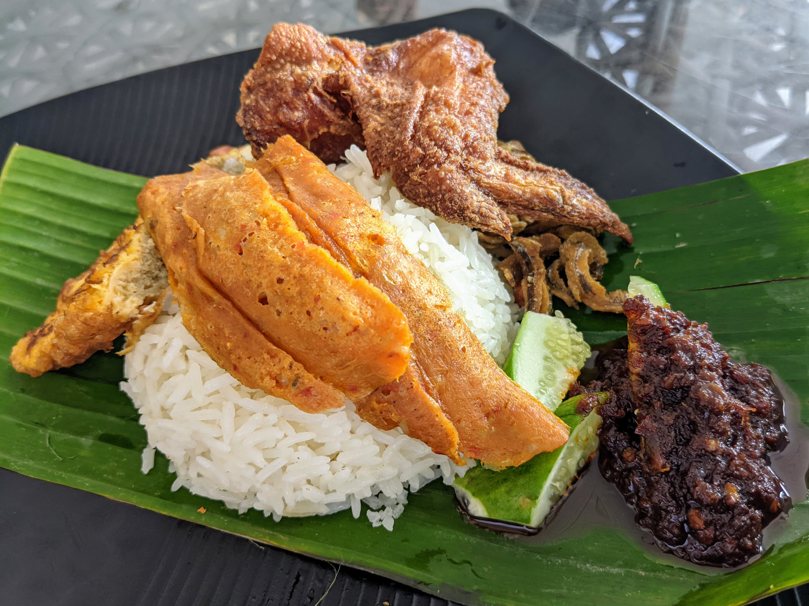

Recipes: Nasi Lemak

Description
Nasi lemak is a dish originating in Malay cuisine that consists of fragrant rice cooked in coconut milk and pandan leaf. It is commonly found in Malaysia, where it is considered the national dish.
Ingredients
- 2.5 cups jasmine rice
- 7 ounces coconut milk
- 2 pandan leaves, cut crosswise into 2-inch pieces
- One 1-inch knob fresh peeled ginger, julienned
- 1.5 teaspoons Diamond Crystal kosher salt, plus more to taste; for table salt use half as much by volume or the same weight
Steps
- Set up a tiered steamer, filling the bottom section with about 3 inches of water. Bring to a boil over high heat. Line the steamer tier with cheesecloth.
- Meanwhile, place the rice in a strainer and rinse the grains under running water until the water is almost clear. Drain rice, then transfer to a 10-inch nonstick skillet and add the coconut milk, 7 ounces water, pandan leaves, ginger, and salt.
- Cook on medium heat, stirring continuously, until it thickens like rice pudding, 8-10 minutes.
- Transfer the rice mixture to the cheesecloth-lined steamer tier and spread it in a roughly even layer. Set steamer tier over bottom section of boiling water, cover, and steam over medium heat until the grains are fully cooked, about 45 minutes; start checking rice doneness after 35 minutes of steaming.
- Once the rice reaches your preferred texture, turn off the heat and leave it to continue steaming, covered, until the steaming stops. The rice should be just cooked, with separate grains and a rich flavor of coconut.
- Serve with sambal tumis and other nasi lemak accompaniments, depending on your preference (note that it's typical to leave the pandan leaves in the nasi lemak, as it's understood they will be removed at the table by the diner; do not eat them).